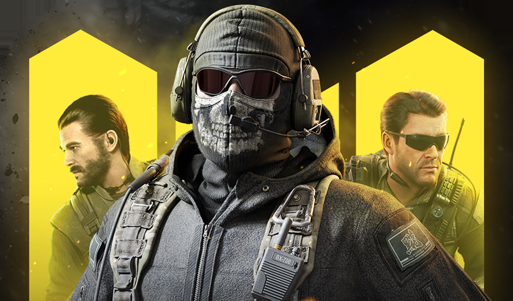
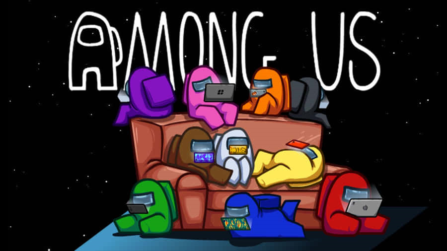

INTRODUCTION
I started gaming when i was in 6th standared and litelly it was when i realised that there is so much fun in playing games like fighting characters,adventuring and that was then i realised in gaming world there is no end it just keeping growing and growing 1000 of new games are released every year yes Of course they are costly for people like us middle class family so after i got to know about the concept of playing cracked games i was like overjoyed it was like a whole new path to me but it was only a minute of joy afetr i realised about the thing word specification in my words limitation of your 10 year old machine which you are suppose to play games on well that is the one issue that you cannot ignore in my case i was like Damit!.
Well in the end there are still games that you can play on your Low end Machine that the only hope to keep us entertained for people like us.
Below i mentioned some games which i played on pc and some which i want to play.
GAMES I HAVE PLAYED
Minecraft

Valorant

Call Of Duty

Bad Company
Roblox
Among Us

GAMES I WANT TO PLAY
Watch Dogs
Hitman
Grand Theft Auto V
Tomb Raider